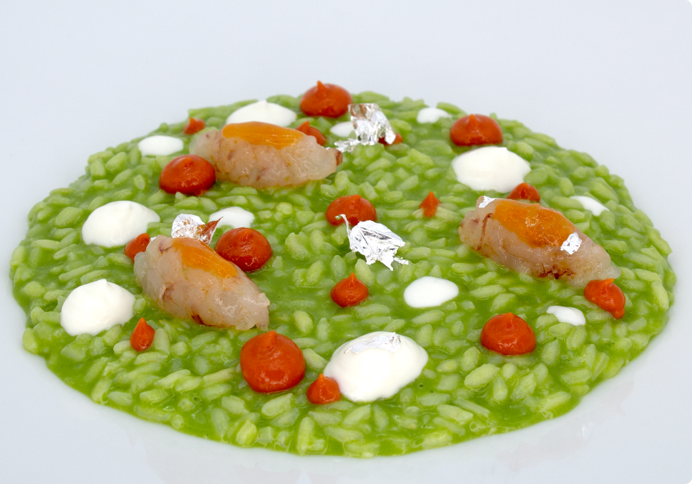
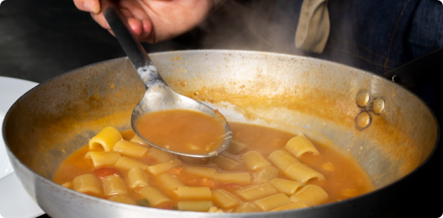
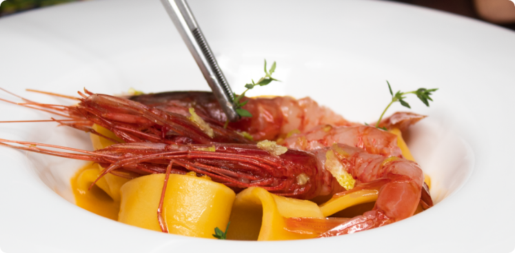

RISOTTO
AL PROFUMO
DI PRIMAVERA
RICETTA DEL MESE
Risotto al pesto di basilico, gambero rosso, latte cotto di bufala e sfusato d’Amalfi.


PACCHERI AL RAGÙ DI PESCATRICE
Scopri di più

TUBETTI CON GAMBERO ROSSO
Scopri di più